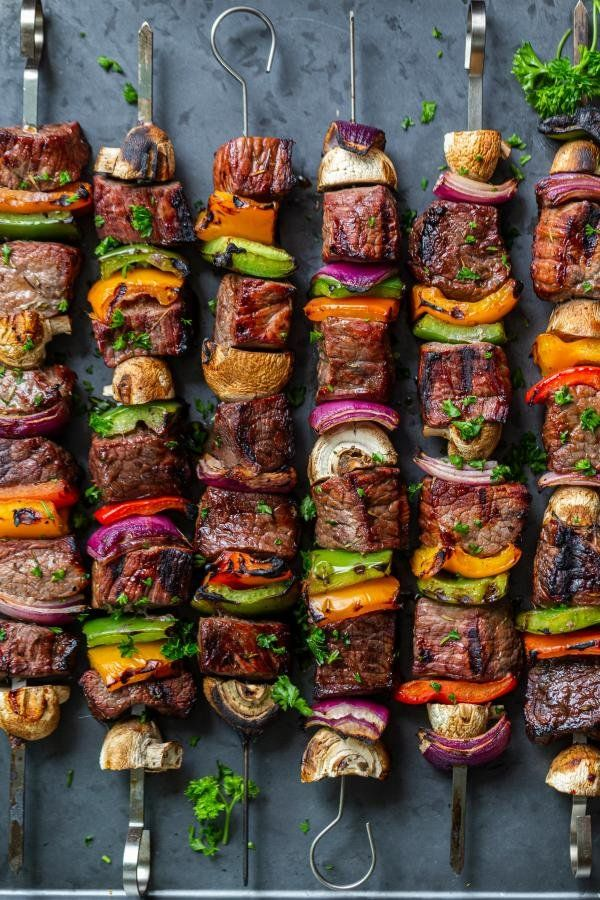

Sish Kebab
How do you Cook Beef Shish Kabobs?
- Cut beef into cubes and marinate for at least 6 hours. For tender cuts, marinate it for 30 minutes to 2 hours.
- Cut your veggies. Season them liberally.
- Thread your beef and veggies on to a skewer.
- Cook them on a hot girll!
- Allow the skewers to rest to soak in the juices. Bon appetit!

Prepare Veggies for Kabobs
- Onions: You really can’t go wrong here. Use yellow, red or white – whatever you like best! For the kabob, cut the onion into 4 pieces and again in half so the pieces come out triangular.
- Bell Peppers: Use red, yellow and green – the more color the better! Just make sure to cut them into similar-sized pieces as your beef. This way, the beef and veggies will hit the grill evenly, giving you perfect grill marks.
- Mushrooms: You can use white bottom, cremini or portobello. Try to pick mushrooms that are similar in size to your beef pieces so you don’t have to trim them down.